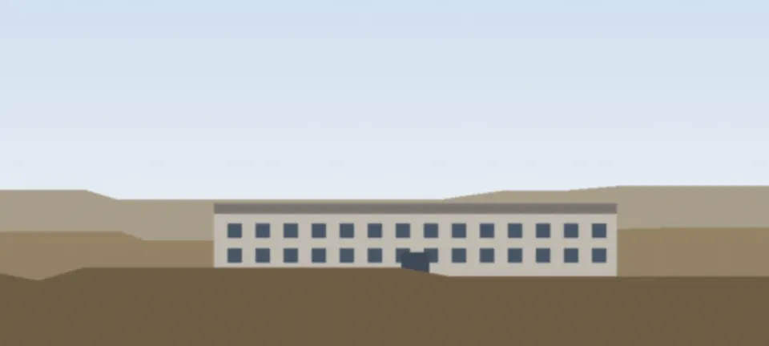
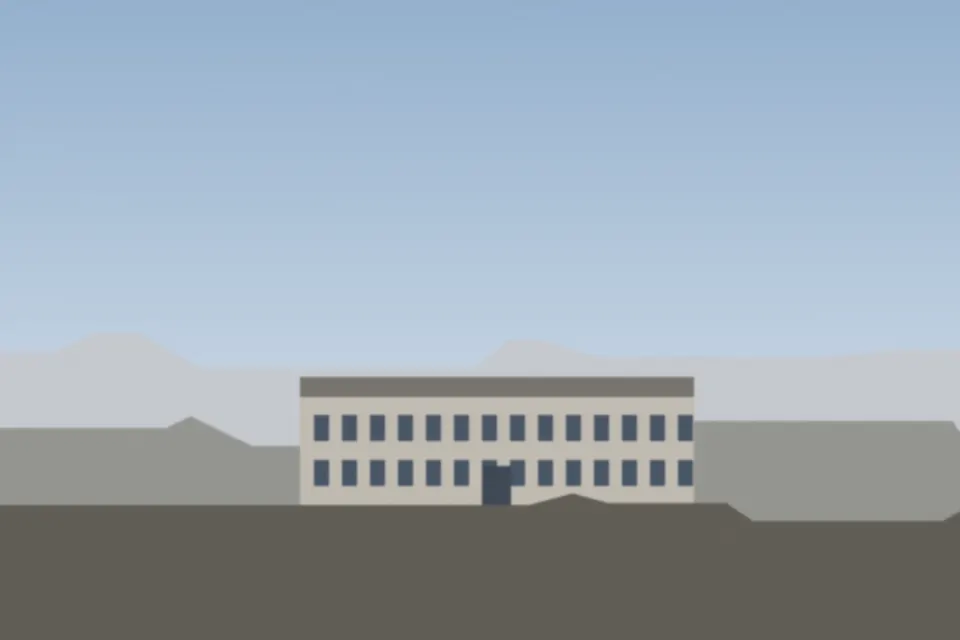

Licenciatura en Gestión Ambiental, en Trelew
Cinco años, presencial y gratuita. Para entender el ambiente de la Patagonia y saber qué hacer con él: el agua, la costa, la meseta y las ciudades.
Inscribite al ingreso 2027La inscripción cierra el .

Qué vas a hacer
- Medir y entender: calidad del agua y del aire, suelos y biodiversidad, con los equipos del laboratorio de la Sede.
- Planificar: ordenamiento del territorio, evaluación de impacto ambiental y gestión de residuos para municipios y empresas.
- Trabajar de esto: en organismos públicos, consultoras, industrias y áreas protegidas. Con el título intermedio, desde el tercer año.
En números
Duración
5 años
Título intermedio
3 años
Costo
$ 0 es pública
Horario de cursada
18 a 22 h
Cómo se entra
Cuatro etapas, de diciembre a marzo. Ninguna es un examen.
-
Preinscripción
En el sistema de alumnos de la universidad (SIU-Guaraní), con tu DNI y un correo. Tarda unos 10 minutos.
-
Documentación
DNI y título secundario, o la constancia de que lo estás terminando. En Alumnos de la Sede, de 8 a 13 h.
-
Curso de ingreso
Presencial y no eliminatorio: sirve para empezar con una base común.
-
Primer día de clases
El horario de cada materia sale en la agenda de aulas una semana antes.
La inscripción cierra el 18 de diciembre
Si tenés dudas, escribinos a ingreso@ejemplo.unp.edu.ar o llamá al (0280) 442-1234.
Preguntas frecuentes
¿Tengo que rendir un examen para entrar?
No. El curso de ingreso no es eliminatorio: todas las personas preinscriptas que presentan la documentación empiezan la carrera.
¿Puedo inscribirme si todavía no terminé el secundario?
Sí, con una constancia de alumno regular. Tenés tiempo de presentar el título hasta el 30 de junio de 2027.
¿Se puede cursar trabajando?
Sí. Las clases son de 18 a 22 h. Las salidas de campo se avisan con un mes de anticipación y casi todas son los sábados.
¿Hay becas?
Sí: de la universidad (comedor, transporte y apuntes) y las becas nacionales. Se piden en marzo, en Bienestar Estudiantil.